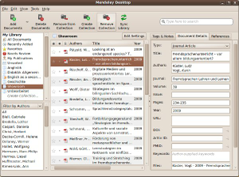

Mendeley
Dieser Artikel wurde für die folgenden Ubuntu-Versionen getestet:
Ubuntu 17.10 Artful Aardvark
Ubuntu 16.04 Xenial Xerus
Zum Verständnis dieses Artikels sind folgende Seiten hilfreich:
 Bei Mendeley
Bei Mendeley  handelt es sich um ein proprietäres Programm zur Verwaltung von Literatur. PDF-Dokumente können unmittelbar mit Mendeley verwaltet (also auch in der Cloud gespeichert) werden. Aber auch Quellen, die nicht elektronisch vorliegen, können unter Eingabe der ISBN, ISSN oder DOI bequem in den Katalog aufgenommen werden. Mendeley bietet auch ein umfangreiches Web-Interface, auf das man nach Anmeldung auf der Webseite von Mendeley Zugriff hat. In Verbindung mit einem persönlichen Profil kann man seine Dokumente auch über das Web-Interface einsehen und sie mit anderen Nutzern innerhalb eines sozialen Netzwerks austauschen. Zusätzlich bringt Mendeley ein Plugin zur Zusammenarbeit mit LibreOffice und OpenOffice mit, mit dessen Hilfe automatisch Zitate, Fußnoten oder Literaturverweise bzw. Bibliografien in eine Text-Datei eingefügt werden können. Dabei wird eine große Sammlung an Zitationsstilen unterstützt. Innerhalb der PDF-Dokumente können Notizen angebracht und Textstellen markiert werden.
handelt es sich um ein proprietäres Programm zur Verwaltung von Literatur. PDF-Dokumente können unmittelbar mit Mendeley verwaltet (also auch in der Cloud gespeichert) werden. Aber auch Quellen, die nicht elektronisch vorliegen, können unter Eingabe der ISBN, ISSN oder DOI bequem in den Katalog aufgenommen werden. Mendeley bietet auch ein umfangreiches Web-Interface, auf das man nach Anmeldung auf der Webseite von Mendeley Zugriff hat. In Verbindung mit einem persönlichen Profil kann man seine Dokumente auch über das Web-Interface einsehen und sie mit anderen Nutzern innerhalb eines sozialen Netzwerks austauschen. Zusätzlich bringt Mendeley ein Plugin zur Zusammenarbeit mit LibreOffice und OpenOffice mit, mit dessen Hilfe automatisch Zitate, Fußnoten oder Literaturverweise bzw. Bibliografien in eine Text-Datei eingefügt werden können. Dabei wird eine große Sammlung an Zitationsstilen unterstützt. Innerhalb der PDF-Dokumente können Notizen angebracht und Textstellen markiert werden.
Beim Hinzufügen neuer PDF-Dateien werden deren Metadaten und beinhaltende Referenzen automatisch in Mendeley importiert. Außerdem können weitere bibliografische Informationen aus Online-Literaturdatenbanken (wie z.B. Google Scholar oder ScienceDirect) übernommen werden.
Installation¶
Von Mendeley werden
DEB-Pakete  angeboten.
Die unterstützten Ubuntuversionen und Architekturen werden aufgelistet.
Nachdem man sie für die korrekte Ubuntuversion und Architektur geladen hat, müssen DEB-Pakete noch installiert werden.
angeboten.
Die unterstützten Ubuntuversionen und Architekturen werden aufgelistet.
Nachdem man sie für die korrekte Ubuntuversion und Architektur geladen hat, müssen DEB-Pakete noch installiert werden.
Hinweis!
Fremdpakete können das System gefährden.
Benutzung¶
Start¶
|  |
| Literaturverwaltung mit Mendeley |
Nach erfolgreicher Installation ist das Programm bei Ubuntu-Varianten mit einem Anwendungsmenü unter "Anwendungen -> Bildung -> Mendeley" zu finden oder kann direkt mit mendeleydesktop gestartet werden [5]
Import von Dokumenten¶
Mendeley bietet mehrere Möglichkeiten zum Import von Literaturdateien. Über die Schaltfläche "Add Documents" können entweder einzelne Dateien oder ganze Ordner importiert werden. Zusätzlich kann man Mendeley vorgeben, bestimmte Ordner zu beobachten und neu hinzugekommene Literaturdateien automatisch zu importieren.
Neue Dateien in der Bibliothek werden auf Metadaten (Titel, Autor und weitere bibliografische Angaben) hin untersucht, die in einer Seitenleiste angezeigt werden. Sollten die Metadaten unvollständig sein, durchsucht Mendeley die Datenbanken von mehr als 50 verschiedenen Online-Literaturdatenbanken PubMed, Springerlink  , JSTOR etc.) und korrigiert und vervollständigt die Metadaten. Falls Mendeley den Titel nicht finden kann, bietet das Programm dem Benutzer an, entweder den Titel auf Fehler zu untersuchen und es noch einmal zu versuchen oder die Daten manuell einzutragen.
, JSTOR etc.) und korrigiert und vervollständigt die Metadaten. Falls Mendeley den Titel nicht finden kann, bietet das Programm dem Benutzer an, entweder den Titel auf Fehler zu untersuchen und es noch einmal zu versuchen oder die Daten manuell einzutragen.
In den Einstellungen ("Tools -> Options") kann man Mendeley so einstellen, dass die Literatur in einem neuen Ordner nach einer selbst definierbaren Ordnerstruktur abgespeichert wird.
Weitere Informationen zur Benutzung von Mendeley findet man in den Help guides .
Unterstützte Formate¶
Folgende Dateiformate werden von Mendeley unterstützt:
RIS - Research Information System
EndNote XML - EndNote v8, X1 bis X3
Text
Zotero Library
Plugins¶
OpenOffice Plugin¶
Das Plugin zur Zusammenarbeit mit OpenOffice kann man im geöffneten Programm über "Tools -> Install OpenOfficePlugin" installieren. Nach erfolgreicher Installation findet man im geöffneten OpenOffice-Writer eine zusätzliche Werkzeugleiste, über die man unter anderem Literaturverweise und Bibliografien anlegen kann.
Klickt man im OpenOffice-Writer auf die Schaltfläche "Insert Citation", rückt das Mendeley-Fenster in den Vordergrund und eine weitere Schaltfläche mit dem Titel "Send Citation to OpenOffice Writer" erscheint in der Werkzeugleiste. Klickt man wiederum auf diese Schaltfläche, werden die Zitationsangaben des aktuell ausgewählten Dokuments automatisch in den Text im OpenOffice Writer eingefügt.
Klickt man im OpenOffice Writer nun auf "Insert Bibliography", wird automatisch eine Literaturliste mit allen im Dokument zitierten Werken angelegt.
Web Importer¶
Zusätzlich lässt sich über dasselbe Menü ein Web-Importer installieren, der es ermöglicht, Literatur von verschiedensten Datenbanken automatisch in Mendeley zu importieren.
Problembehebung¶
Absturz bei Programmstart¶
Wenn Mendeley regelmäßig beim Programmstart abstürzt, kann es helfen, den Ordner ~/.local/share/data/Mendeley Ltd./Mendeley Desktop/ (Leerzeichen beachten!) testweise umzubenennen oder zu verschieben. In diesem Ordner ist die persönliche Datenbank gespeichert. Mendeley muss alle Daten wieder neu aus dem Web-Account laden, wenn der Ordner umbenannt, verschoben oder gelöscht wurde.
Verbindungsprobleme¶
Mendeley basiert auf Qt4, bringt aber seine eigenen Qt-Bibliotheken mit. Unter Umständen kann es aber zu Problemen führen, wenn Mendeley unter Ubuntu keine systemweiten Qt-Bibliotheken findet. Abhilfe schafft in diesem Fall die Installation der Pakete:
libqt4-webkit
libqt4-svg
libqt4-xmlpatterns
 mit apturl
mit apturl
Paketliste zum Kopieren:
sudo apt-get install libqt4-webkit libqt4-svg libqt4-xmlpatterns
sudo aptitude install libqt4-webkit libqt4-svg libqt4-xmlpatterns
 Übersichtsartikel
Übersichtsartikel- Erstellt mit Inyoka
-
 2004 – 2017 ubuntuusers.de • Einige Rechte vorbehalten
2004 – 2017 ubuntuusers.de • Einige Rechte vorbehalten
Lizenz • Kontakt • Datenschutz • Impressum • Serverstatus -
Serverhousing gespendet von